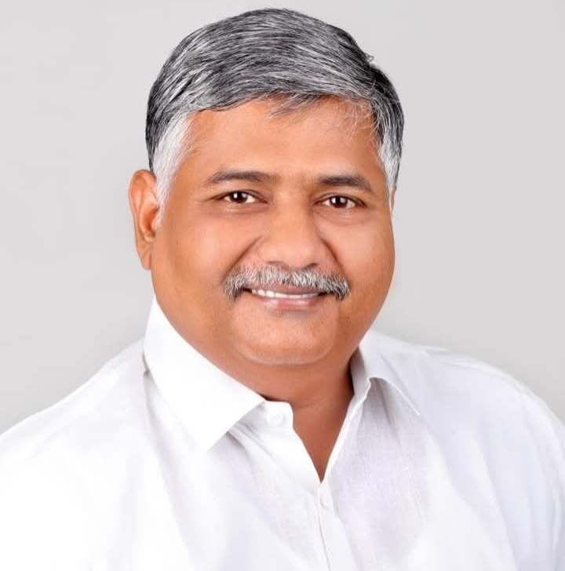
Kurra Apparao garu is a leader who constantly walks among the people with public service as his ultimate goal. From village level to mandal level and constituency level, he is a people's leader who treats public problems as his own and always stands at the forefront to solve them. He is currently serving as Chairman of Guntur Mirchi Yard, working tirelessly for the welfare of farmers, the development of youth, and the well-being of the common people. With development as his aim and welfare as his mission, he moves forward with the vision of providing a better future for every family.
At a young age, Mr. Kurra Apparao was elected as the Mandal Telugu Yuvatha President, served twice as a member of the District Telugu Desam Party Committee, held the position of State Telugu Yuvatha General Secretary, served as the VIDC Chairman, Tourism Corporation Director, and was elected as the Chairman of the Guntur Mirchi Yard.
Since becoming Chairman of Guntur Mirchi Yard, Sri Kurra Apparao has been providing free quality food daily to farmers who come from distant areas, personally supervising to ensure their comfort.
Through his efforts, the price of mirchi empty bags brought by farmers was increased from Rs. 25 to Rs. 40, bringing greater financial benefit to the farmers of Guntur district.
Sri Kurra Apparao donated Rs. 5 Lakhs to the Telugu Desam Party, demonstrating his unwavering commitment and dedication to the party.
Sri Kurra Rattaiah and Sri Kurra Apparao have stood at the forefront for 30 years, solving problems for the party and the people alike. They stood by the poor in their times of difficulty, and their legacy of service lives on in the hearts of the people.
Played a pivotal role in the victory of the TDP ZPTC candidate in the 2014 elections, strengthening the party's base in Edlapadu Mandal and surrounding areas.
After TDP's defeat in 2019, he worked tirelessly to rebuild and strengthen the party across Ummadi Guntur District, which laid the foundation for the party's landslide victory in 2024.
During the COVID-19 pandemic, he distributed essential commodities worth approximately ₹25 lakh in his native village, Unnava, as well as in Guntur city, to support people in need.
Played a major role in the TDP victories in Chilakaluripet, Pedakurapadu, Prathipadu and Guntur West constituencies in the 2024 elections through his strong political network and dedication.
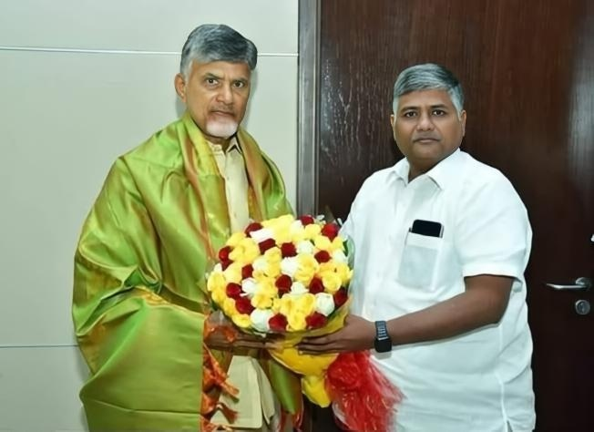
AP Chief Minister Sri Nara Chandrababu Naidu garu met respectfully by Guntur Mirchi Yard Chairman Kurra Apparao garu.
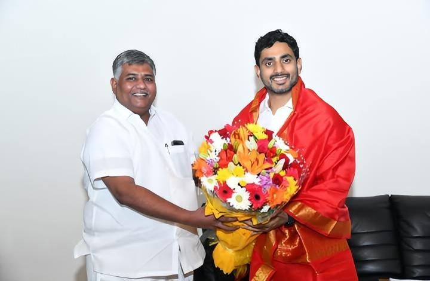
AP IT Minister Sri Nara Lokesh garu met respectfully by Guntur Mirchi Yard Chairman Kurra Apparao garu.
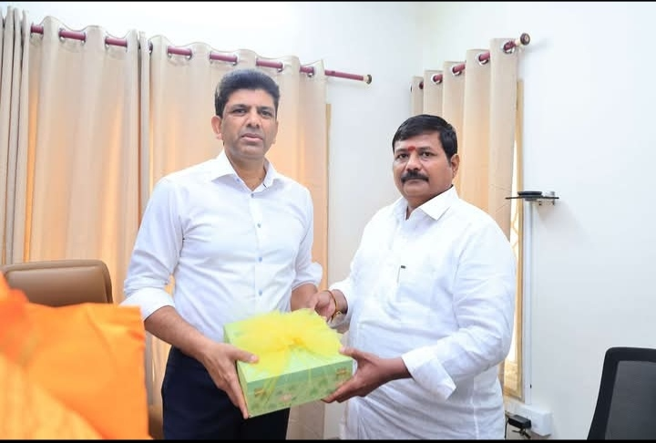
Guntur Mirchi Yard Chairman Kurra Apparao garu with Union Minister of State for Rural Development Sri Pemmasani Chandra Sekhar garu.
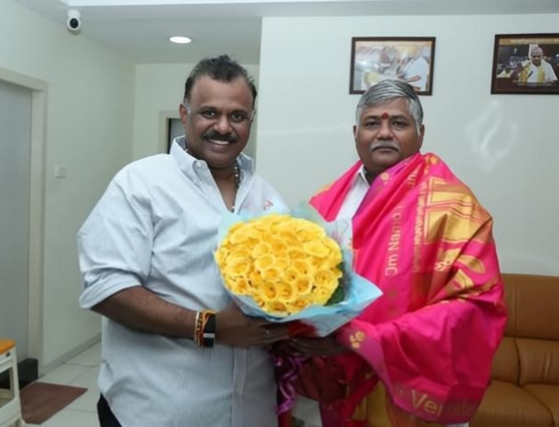
Guntur Mirchi Yard Chairman Kurra Apparao garu with AP Revenue Minister Sri Anagani Satya Prasad garu.
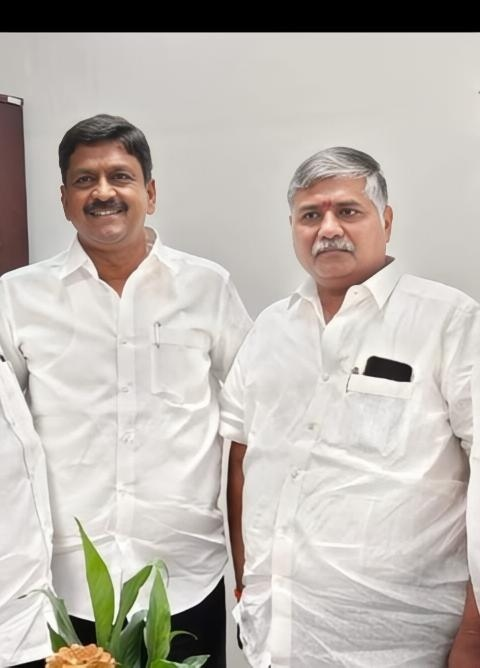
Guntur Mirchi Yard Chairman Kurra Apparao garu with AP Finance Minister Sri Payyavula Kesav garu.
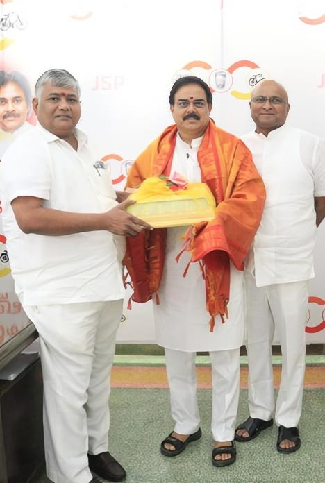
Guntur Mirchi Yard Chairman Kurra Apparao garu with AP Civil Supplies Minister Sri Nadendla Manohar garu.
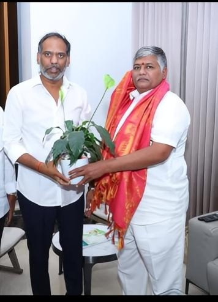
Guntur Mirchi Yard Chairman Kurra Apparao garu with AP Electricity Minister Sri Gottipati Ravi Kumar garu.
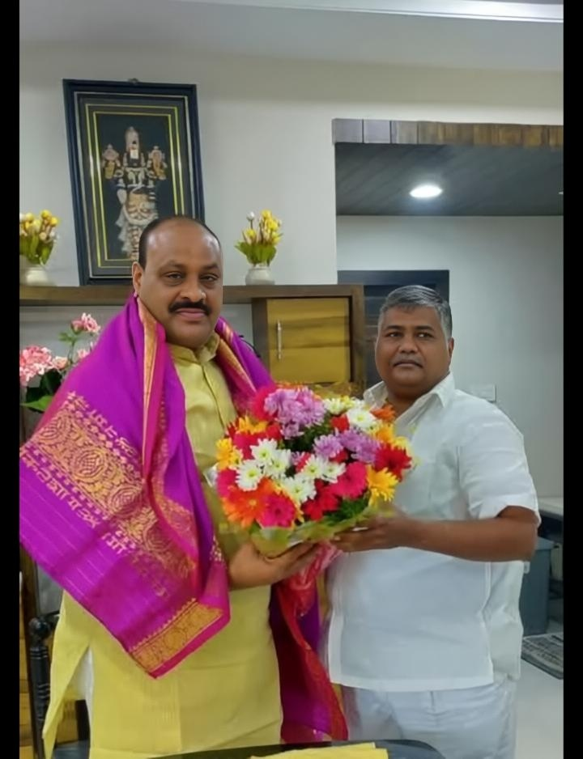
Guntur Mirchi Yard Chairman Kurra Apparao garu with AP Agriculture Minister Sri Kinjarapu Achennaidu garu.
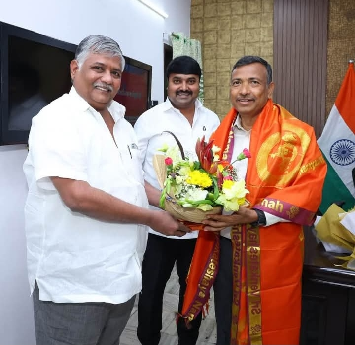
Guntur Mirchi Yard Chairman Kurra Apparao paid a courtesy visit to Guntur Range IG Sarvashresth Tripathi.
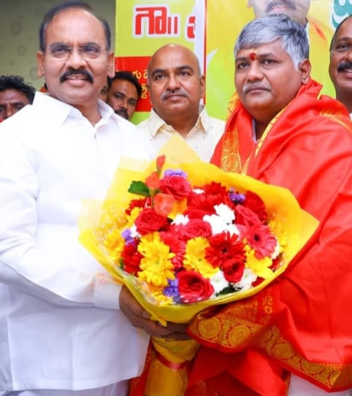
Guntur Mirchi Yard Chairman Kurra Apparao is with Chilakaluripeta MLA Prathipati Pullarao garu.